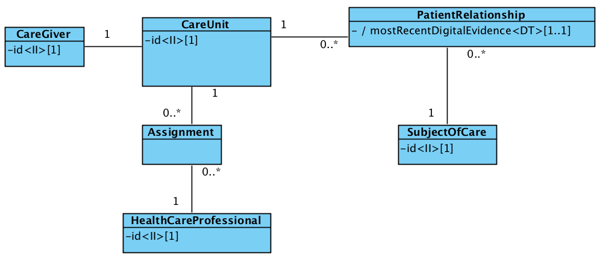

ehr:accesscontrol
1.0.6 - draft
ehr:accesscontrol - Local Development build (v1.0.6) built by the FHIR (HL7® FHIR® Standard) Build Tools. See the Directory of published versions
Här beskrivs de meddelandemodeller som tjänstekontrakten bygger på. För varje meddelandemodell beskrivs hur mappning ser ut delvis mot V-TIM, här version 2.2 samt mot schema (XSD) för tjänstekontrakt.
Följande V-MIM beskriver den konceptuella vy av vårdrelation som tjänstekontraktet AssertCareEngagement ålägger producenterna att kunna representera. Konceptet ”PatientRelationship” är ett för ändamålet syntetiserat koncept som representerar att en vårdenhet via elektroniska bevis i form av administrativ vårdinformation kan intyga att medarbetare med uppdrag hos enheten eller vårdgivaren rimligen har professionella skäl att begära åtkomst till patientens sammanhållna journalföring.

Figur V-MIM, AssertCareEngagement| Klass.attribut | Mappning mot V-TIM 2.2 | Mappning tjänstekontrakt AssertCareEngagement |
|---|---|---|
| PatientRelationship.mostRecentDigitalEvidence | Kontakt.Ställningstagande kontakttid eller Framställan.(attribut för registreringstidpunkt saknas i V-TIM) | Svar.HasCareEngagement (ges värdet ”true” om minst en instans finns för aktuell med datum yngre än 2 veckor för aktuell patient/vårdenhet. |
| CareUnit.id | Informationsresurs.vårdenhet id | Begäran.careUnitHsaIdentity |
| CareGiver.id | Informationsresurs.vårdgivare id | Begäran.careGiverHsaIdentity |
| Assignment | Rättighet | Underförstått. Representeras som krav på tjänstekonsument (att begäran.healthcareProfessionalHsaIdentity agerar i uppdrag hos Begäran.careUnitHsaIdentity). |
| HealthCareProfessional.id | Personal.id | Begäran.performer |
| SubjectOfCare.id | Patient.person_id | Begäran.subjectOfCareId |
Inga formatregler utöver det som ges av respektive kodverk (HSA-id).